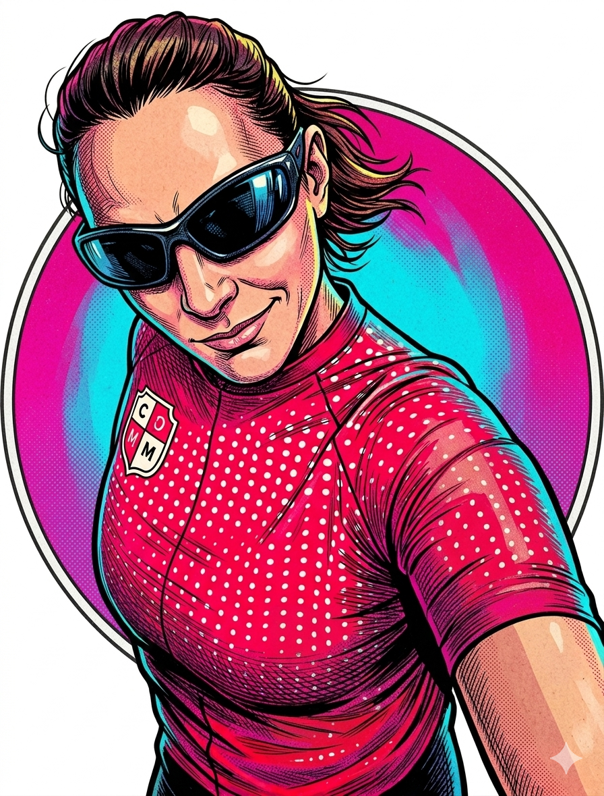
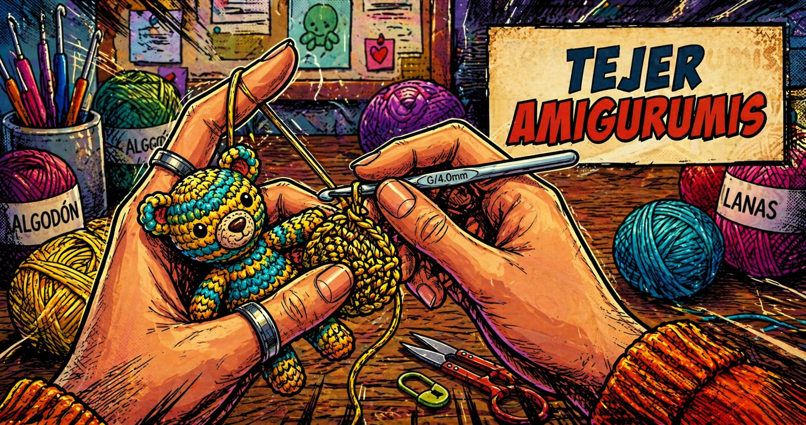
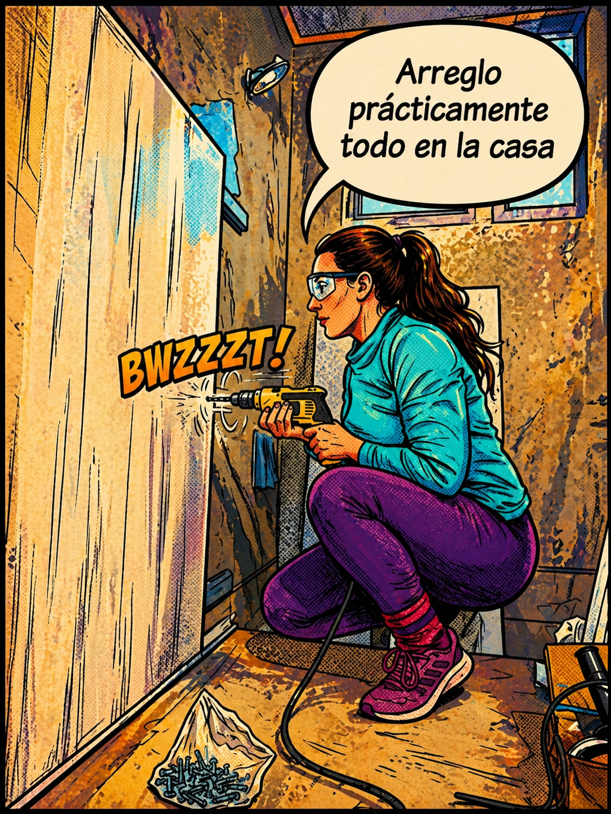
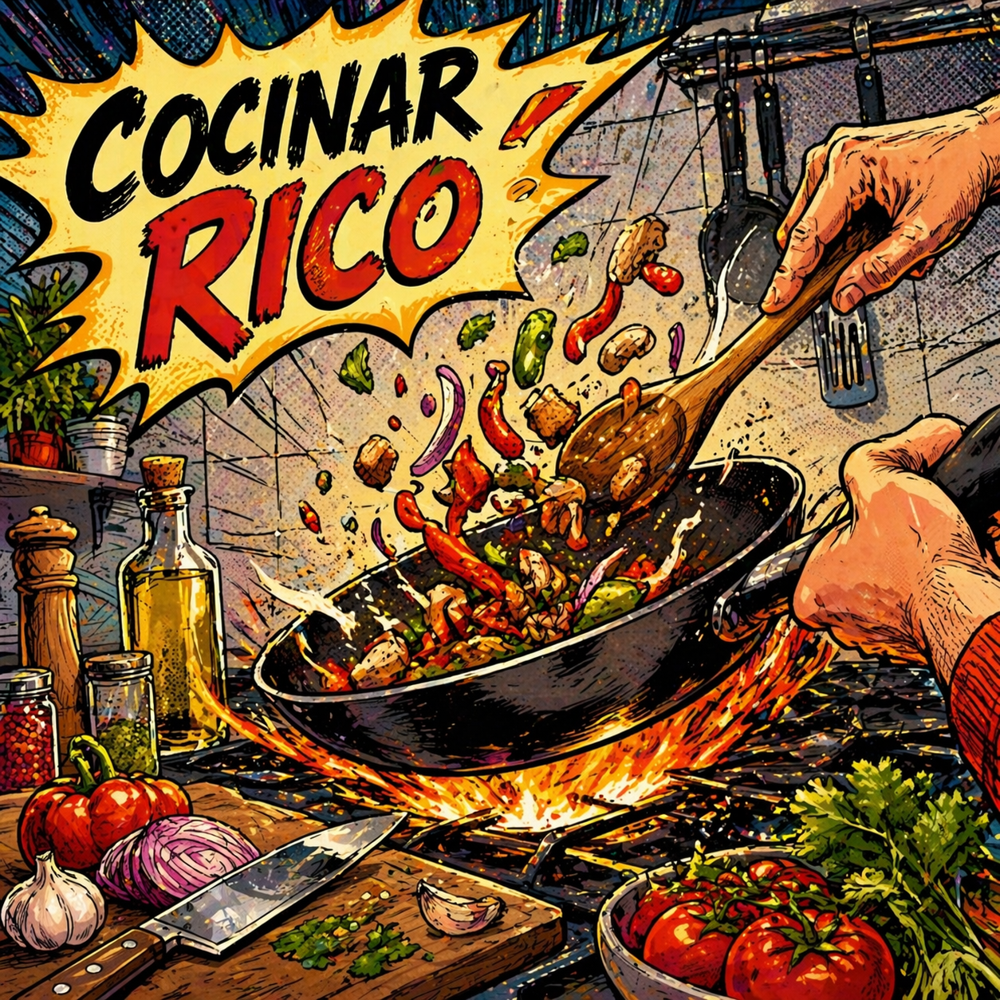
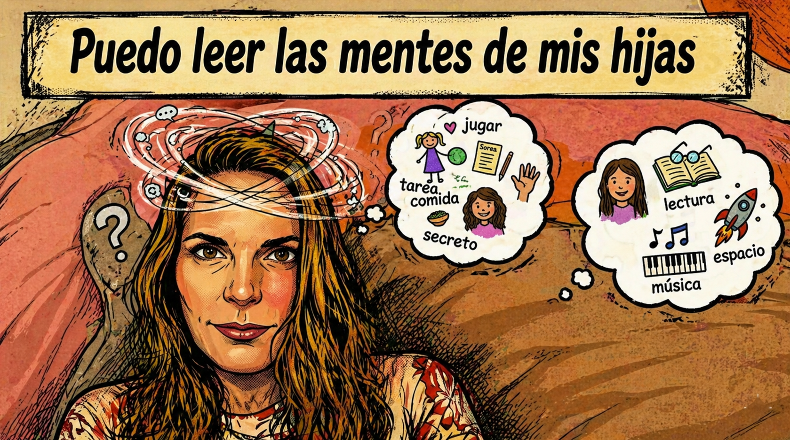

Marcela Roig
Ubicación: Tigre, Buenos Aires
Edad: 43
Superpoderes




Películas favoritas
El viaje de Chihiro
La historia sigue a Chihiro en un viaje por un mundo extraño lleno de
seres mágicos y sucesos inexplicables.
Una metáfora de la evolución personal, donde Chihiro debe aprender a adaptarse a su nuevo
entorno y descubrir su fuerza interior. La película trata temas universales pero desde el
subtexto, dejando cierto espacio para la interpretación del espectador. Además, su marcado
realismo mágico hace que muchas veces la acción avance de forma algo más abstracta e
intuitiva, un rasgo habitual en la filmografía de Miyazaki.
Drácula
Una reinterpretación del mito clásico que pone el foco en el amor como
fuerza trágica y
destructiva, donde Drácula no es solo un monstruo, sino una figura atravesada por la pérdida
y la condena. La película trabaja temas universales como el deseo, la muerte y la dualidad
entre lo humano y lo monstruoso, apoyándose mucho en lo simbólico más que en lo explícito.
Orgullo y Prejuicio
Una adaptación que pone el foco en los vínculos, el orgullo y las
barreras sociales,
mostrando cómo las emociones y los juicios apresurados pueden condicionar las relaciones. La
película trabaja temas universales como el amor, la clase social y el crecimiento personal,
desarrollándolos de forma sutil, más desde los gestos y las miradas que desde lo explícito.
Además, su tono es íntimo y delicado, con una puesta en escena que acompaña lo emocional sin
exagerarlo.
Discos favoritos
-

Imagine Dragons - Evolve
Cortina musical para estar frente a la computadora
-

Iron Maiden - Fear of the Dark
Indispensable para entrenamientos demandantes.
-

Calle 13 - Entren los que quieran
Para bailar en el living y cantar a los gritos.
-

Divididos - Narigón del siglo
Fijo para andar por las rutas argentinas.